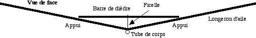
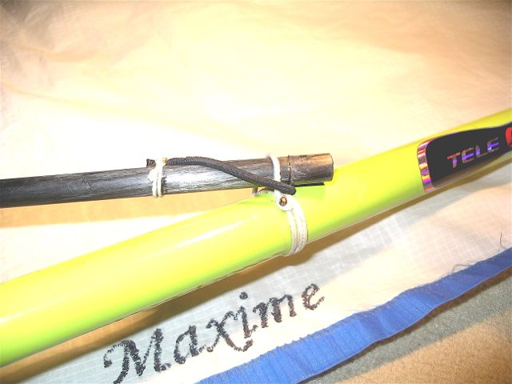
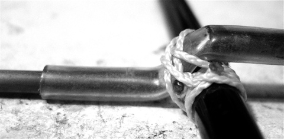
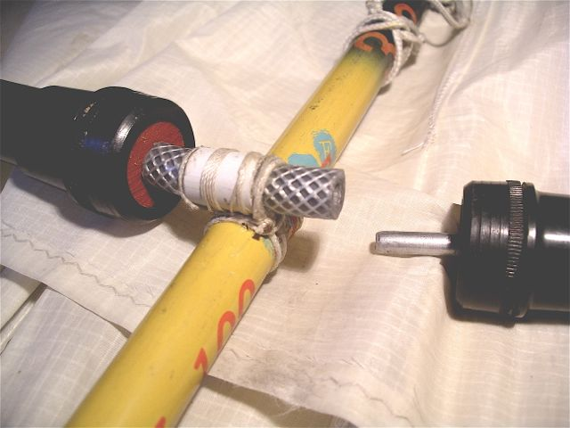

Pour raccorder au centre les 2 longerons d'aile d'un cerf-volant, vous pouvez utiliser... un raccord tubulaire ou manchon. Mais celui-ci doit être très solide pour encaisser la flexion.
Pour vous rendre compte de l'effort, montez votre CV, mettez-le en tension et tenez le tube à la main sur la même longueur que celle entrant dans le raccord. Cela vous donnera une bonne idée des forces en présence. Pour y résister, le raccord doit être assez long avec des parois épaisses, donc lourd. Et il faudra éventuellement le courber à un angle donné (lequel ? modifiable ?) pour créer du dièdre. Et si vous voulez mettre de la flèche ?
De plus, si le raccord est trop court, il risquera de faire casser, en général bien droit à ras du raccord, le tube entré à l'intérieur. Si le raccord est plus long, c'est lui qui pourra casser, surtout s'il a été courbé préalablement ce qui crée une zone déjà étirée au point de courbure.
De plus, la fabrication n'est pas immédiate s'il n'a pas une taille standard : il faut d'abord trouver le tube du bon diamètre. Il faut le courber au bon angle sans le casser, ce qui est d'autant plus difficile qu'il est plus gros. Il faut y placer des butées pour que le tube qu'on y entrera ne bute pas simplement sur la courbure, ce qui le détruirait vite (voir Emmanchements pour les butées).
Enfin, on n'est jamais à l'abri d'une casse, sur une rafale, ou plus bêtement au sol pendant le montage ou lors d'une chute.
Ma méthode
Je propose un autre procédé... sans vraiment de raccord ! Il est plus simple à construire avec ce dont on dispose, plus facile à adapter au cas de figure et les angles peuvent être réglés/modifiés après essais, voire sur le terrain selon le vent.
Ma solution tient en 2 points :
• A la place du raccord lui-même, on monte une articulation simple que je détaillerai plus loin.
• Pour l'empêcher de plier, on place au-dessus du total un tube qui peut être long (1 m sur mes oiseaux de 6 m). Celui-ci est retenu au longeron de corps par une ficelle centrale. La longueur de celle-ci, modifiable, fixe le dièdre.

Avantage secondaire : les longerons d'aile peuvent faire aussi un angle longitudinal ("flèche" avant ou arrière) fonction du look à donner au cerf-volant ou des contraintes de construction.
Les 2 bouts du tube transversal sont placés au-dessus des longerons d'aile. Il suffit alors simplement de les maintenir en place, l'effort se fait entre les 2 tubes et non sur cette fixation. J'ai essayé un élastique, solution un peu juste, car sur de grands efforts ou des secousses, le tube de dessus peut passer dessous et tirer sur le lien (ceci dit, je ne l'ai jamais ressenti en vol, mais seulement constaté au retour). A la place de l'élastique, je mets maintenant une ficelle, 2 tours collés sur la canne et une anse de longueur juste suffisante pour que le tube avec son embout éventuel passe dedans : il ne ressort plus tout seul, une boucle d'élastique le sécurise, mais il ne subit pas normalement de force le faisant sortir.

Certains sceptiques mettent du ruban adhésif "pour assurer", ou une pièce intermédiaire avec des gouttières. Cette dernière est délicate et longue à usiner au bon angle, pesante, et je me suis passé sans problèmes depuis 6 ans de ces complications.
Réalisation sur mon Albatros (Cliquer pour agrandir)
Ce montage est solide et encaisse bien les surventes : le tube supérieur plie et donne du dièdre ce qui diminue la charge bien avant que le tube ne casse. Il coulisse aussi un peu dans les passants, surtout ne pas le bloquer dedans ce qui créerait de grosses contraintes, ce n'est PAS la compression du tube qui maintient le dièdre mais sa flexion. J'utilise du tube carbone de 10 sur mon Albatros de 6 m et un tronçon de canne à pêche sur Megoel de 8 m (ben non, ce n'est pas symétrique, mais ça ne change pas l'angle ni la résistance... et le poids, si peu...).
Pour l'articulation centrale, j'ai essayé diverses solutions :
• Sur l'Albatros 1 (RIP...), un petit tube alu courbé rentre dans des trous forés dans les embases des cannes-longerons d'ailes. Il est fixé au tube de corps par un élastique, avec un renfort et une butée collée sur ce dernier pour qu'il ne se déplace pas (voir schéma). Ceci est léger et simple à réaliser. Par contre, il ne faut pas plier plus que la liberté offerte (par exemple sur un coup de vent lors du montage, accident vécu), sinon quelque chose éclate, avec le bras de levier qu'on a, ce qui est rédhibitoire. Il faut donc bien penser, si on veut utiliser ce montage, à mettre dès que possible le tube supérieur avant de finir le montage du CV.
• J'ai aussi utilisé sur Megoel une pièce centrale usinée : chaque canne est pourvue d'un petit bout de tube alu qui entre dans un creux de cette pièce centrale. La réalisation de celle-ci n'est pas très simple : il faut qu'elle offre une certaine liberté d'articulation, mais ne tourne pas intempestivement, par exemple si on n'a encore monté qu'un côté. Avantage : elle ne peut pas casser, ni les tubes, ils se déboîtent si on dépasse un certain angle.
• La solution d'Albatros2, plus simple et légère, que j'ai adoptée définitivement maintenant sur tous mes oiseaux, est de mettre simplement un bout de durite au centre à la place de la pièce usinée.
On place dans les cannes de petits tubes alu comme pour Mégoel. Il faut impérativement que la durite soit assez rigide pour ne pas se mettre en Z sous la poussée opposée des 2 longerons d'aile.

De la durite armée d'une tresse est bienvenue. On peut même mettre un diamètre plus gros et doubler à l'intérieur avec une durite plus mince ou à l'extérieur avec un court morceau de tube rigide ou les deux comme sur la photo. Il faut aussi pour contrer le défaut d'alignement que les 2 tubes alu quasiment se rejoignent au milieu pour ne pas créer de couple de torsion.
La durite est attachée au tube central par quelques tours de ficelle collée à la cyano après essais de positionnement en vol.

Quelle que soit la solution choisie, il faut veiller à ce que les cannes ne viennent pas buter sur le longeron de corps en le pressant transversalement ce qui pourrait l'aplatir et l'éclater. C'est la durite qui doit reprendre cet effort de compression.
Avantages secondaires, mais utiles sur le terrain, de cette solution :
1) la durite retient les tubes pendant le montage, ce qui n'est pas le cas de la pièce usinée qui a tendance à déboîter d'une aile quand on monte l'autre et vice-versa ce qui m'a bien énervé dans le temps...
2) Rien n’explose si on force : la durite se courbe, et, in extremis, les tubes finissent par se démancher.
Avec cette solution, je n’ai jamais cassé le centre, ni en vol, ni au sol, ni lors d'un « atterrissage » mouvementé, ce qui est méritoire vu la fréquence du cas...
Conclusion : j’ai décrit une structure créée pour mes oiseaux. Mais j’espère aussi que vous pourrez en tirer parti, globalement ou sur des détails, sur d’autres cerfs-volants pour les rendre plus fiables et plus solides tout en étant plus faciles à créer avec des matériaux courants. Bonne construction et surtout... bons vols !